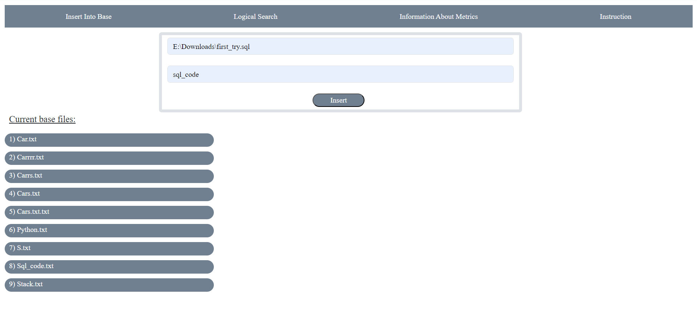
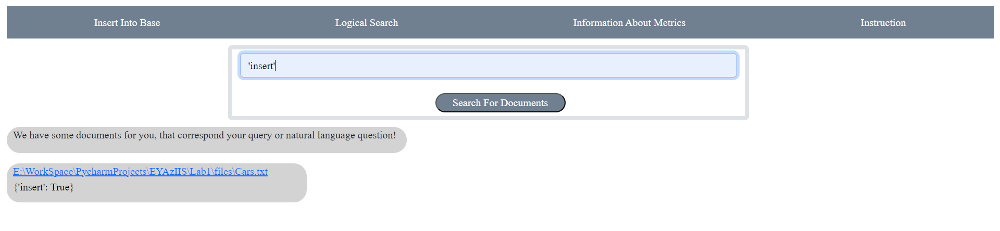
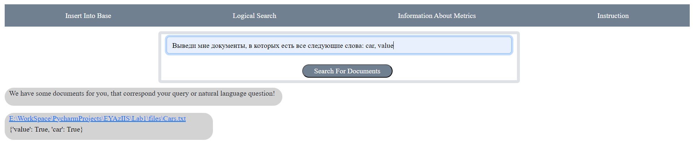
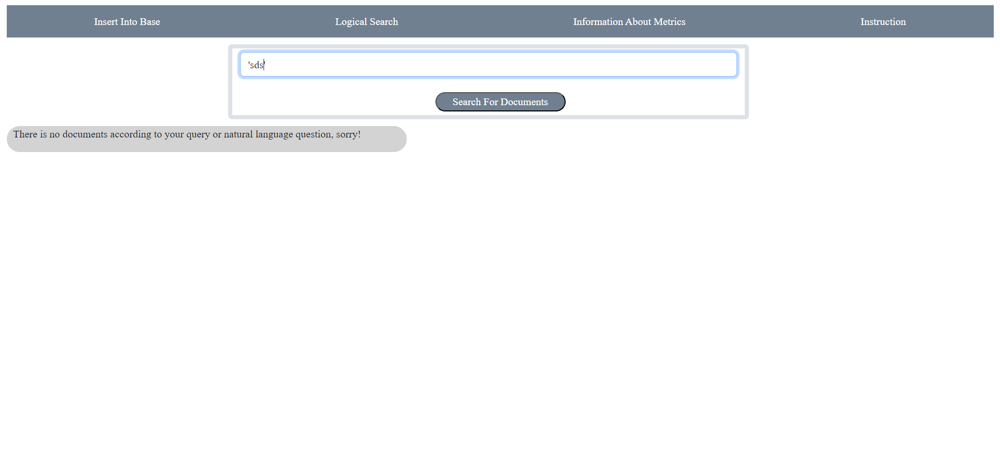
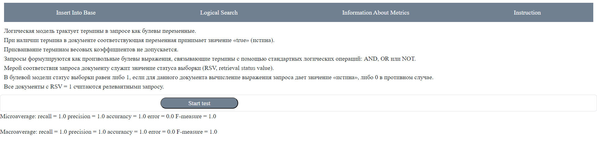

- 1. There are some interface elements to make local documents stored inside our base.

- 2. There are some interface elements to search different words among stored documents.
- 1. There is and example of logical search, cause search
expression consists of words and logical operators.

- 2. There is and example of natural language search,
cause search expression consists of words and natural language expressions.

- 3. There is and example of logical search, that causes an empty result
output and makes system drop special phrase to let user know that there is no documents found.

- 3. Metrics screen consists of different test metrics to be used during our programs efficiency analyze
